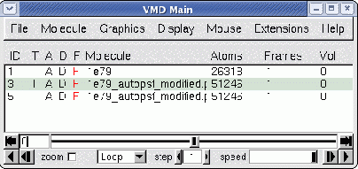

Next: Main Window Molecule List
Up: Description of each VMD
Previous: Description of each VMD
Contents
Index
Subsections
Main Window
Figure 5.1:
The Main window
|  |
The Main window is the main way to access other windows,
load and save files, control trajectory playback,
change various global program settings, access help, and to quit
the program.
Many of these actions can also be performed with the menu shortcut keys
described in Table 5.3.
The Quit menu item exits VMD. This will bring up
another window which verifies that you do indeed wish to exit.
Press Yes to quit, or No to return to VMD.
Help
The Help menu items each start a web browser to display on-line VMD help documents. The browser is designated by the environment variable
VMDHTMLVIEWER. Selecting a help item multiple times may start
multiple browsers. The default web browser is Mozilla for Unix systems, and
the built-in Explorer shell for Windows systems. The menu contains items for the VMD Quick Help
page, as well as the current User's Guide, FAQ, and links to various helpful
information and programs.
Next: Main Window Molecule List
Up: Description of each VMD
Previous: Description of each VMD
Contents
Index
vmd@ks.uiuc.edu